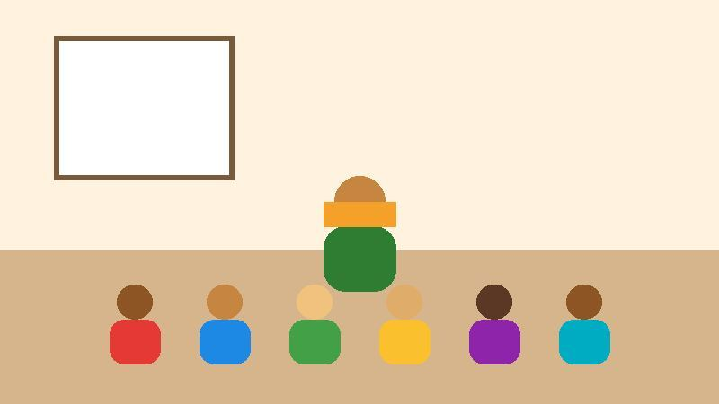

Semear Futuro
Educação e oportunidade para crianças e adolescentes da zona norte de Porto Alegre desde 2014.
Quem somos

Somos uma organização sem fins lucrativos formada por educadores, famílias e voluntários. Atendemos cerca de 180 crianças e adolescentes no contraturno escolar, com atividades gratuitas.
Nossa missão
Garantir que cada criança atendida tenha apoio para aprender, conviver e sonhar com o próprio futuro.
Valores
Respeito, participação da comunidade e transparência no uso dos recursos.
Como ajudar
Você pode doar materiais, apoiar financeiramente ou dedicar algumas horas por semana como voluntário.
Quero ser voluntárioContato
Rua das Acácias, 245, Bairro Esperança, Porto Alegre, RS, CEP 91000-000
Telefone: (51) 3000-0000
E-mail: contato@semearfuturo.org.br